Project 5 / Face Detection with a Sliding Window
- Introduction
In this project, I try to build a face detector using sliding window approach. For the baseline implementation, I use HoG feature and linear SVM classifier. Other possible classifiers and features are explored in this project as extra credits. However, they either improve marginally at the expense of siginificant increase of computation time or even lower down the average precision. The baseline implementation is actually good enough with 92% average precision and acceptable running time of 2 secs per image
- Baseline Implementation
In the baseline implementation, the HoG feature is calculated with template_size=36 and hog_cell_size=3. The SVM classifier is trained with alpha=0.00001 and trained on all the positive examples and 10,000 negative examples. The trained face template is shown as follow:

Face template HoG visualization.
The classifier is run on multi-scale images to deal with different face scales in real images. To do so, the input test images are resized geometrically from 1.0 to 0.2, with scale factor=0.8. Specifically, the image scales are: [0.8^0, 0.8^1, 0.8^2,...0.8^8]. The detected faces are thresholded with confidence=-0.1 and went through a non-maximum suppression step. Finally, the average precision is 92%.

Precision Recall curve.
- Extra Credits
Random forest classifier
I train a random forest classifier with 50 trees. However, the final average precision is much worse than the baseline linear SVM classifier, and it takes significantly longer to test on the testing images with multiple scales.
Precision Recall curve.
AlexNet feature
I also use the pretrained AlexNet model in Matlab as a feature extractor. Specifically, I take the output of the fc7 layer as a 4096 dim feature. This AlexNet feature is appended to the original HoG feature. Since the dimension of input images to the network is [227, 227, 3], I resize the greyscale image to 227x227 and duplicate the single channel image three times to simulate a three-channel color image. These resize and grey to color operations may result in huge domain difference between the source data (ImageNet) and our target data, and thus result in worse performance than expected.
[WARNING] This will take VERY VERY long time to run the detector (~8 hours). This is only for experimental purpose and is not practical at all. A smart object proposal mechanism should be incorporated to reduce the number of windows the algorithm need to examine. The default batch size is 1024 and is able to run without error on a 2GB GPU. Out of memory problem may occur if the memory size is less than 2GB.
Precision Recall curve.
Cascade svm and random forest classifier
Since the SVM classifier is faster to compute compared to the random forest classifier, I try to cascade these two and expect to have a better result. The first step is to run the SVM classifier with lower threshold (-0.5), which gives us high recall but low precision. The next step is to filter out those false positives using the random forest classifier. The running time is acceptable but the average precision decreases slightly by 3% to 89%. Although the average precision decreases, we can observe that the slope is steeper when the recall is greater than 0.8. This means that the cascade random forest classifier do actually help us reject some false positives, but perhaps too aggressive so that the average precision drops marginally.
Precision Recall curve.
- Detection Results
Baseline implementation with svm_thres=0.8 to filter out more false positives for better visualization, at the expense of lower recall. The results clearly demonstrate the power of multi-scale implementation so that it can detect face with significant size difference.
* Complete results for different settings can be found in the html/visualizations_* folders
| 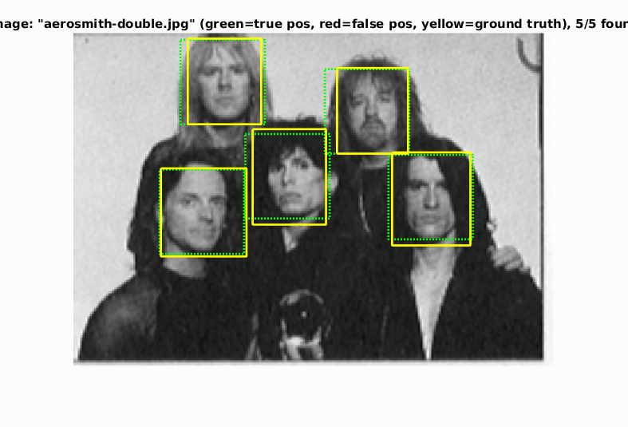 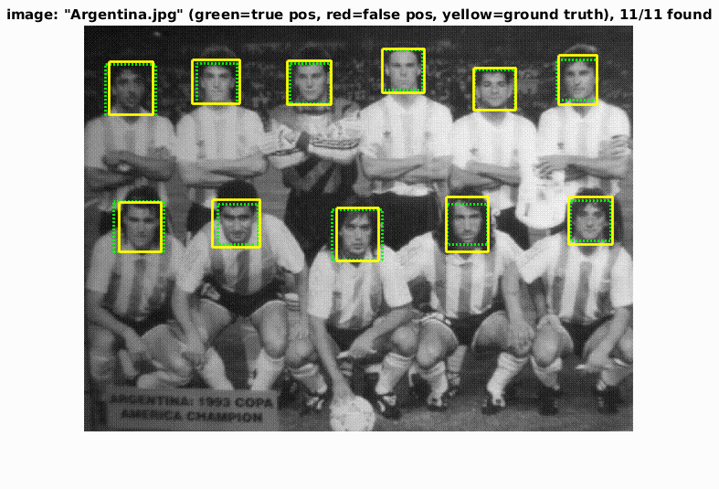 |
| 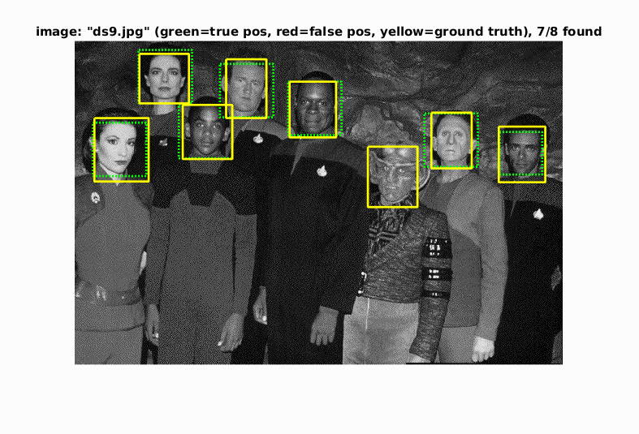 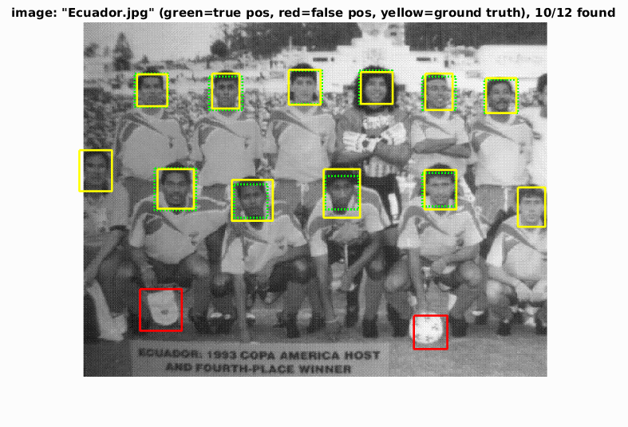 |

|
| 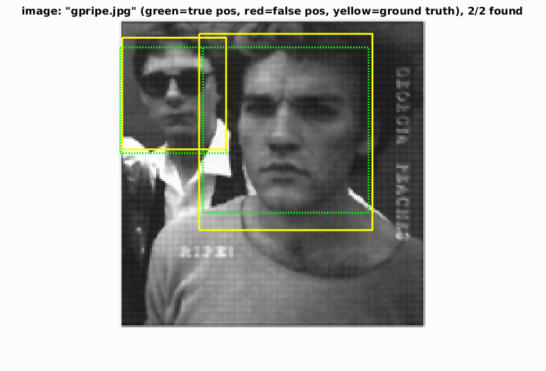 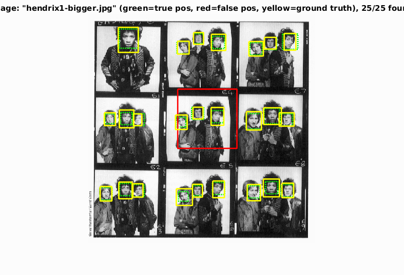 |
| 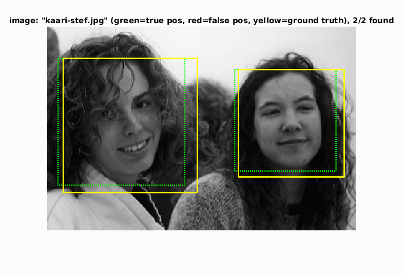 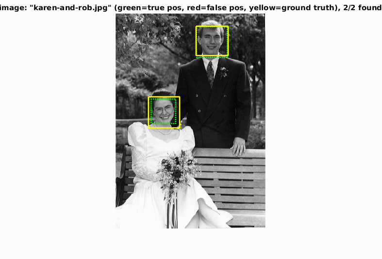 |
| 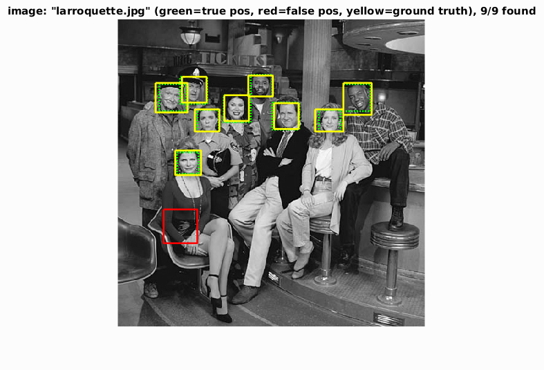 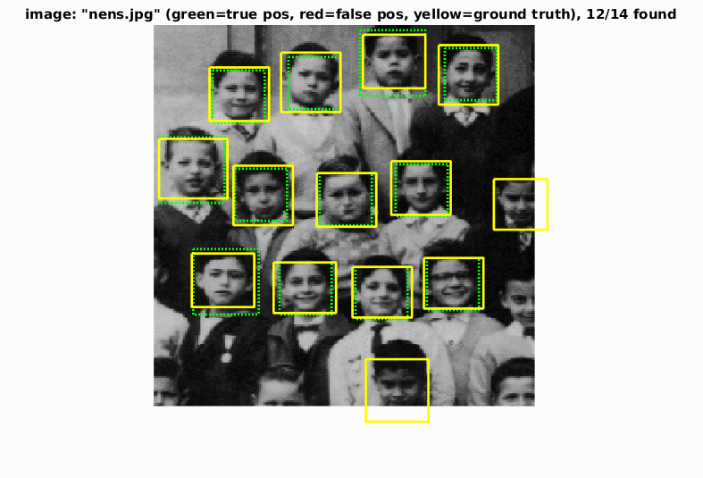 |
| 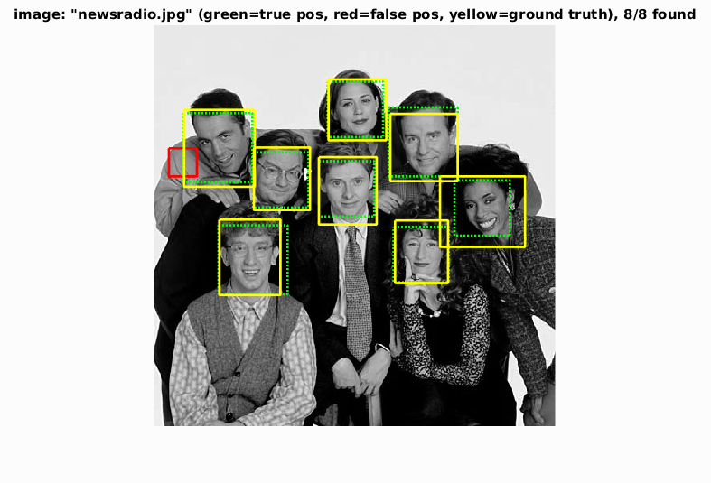 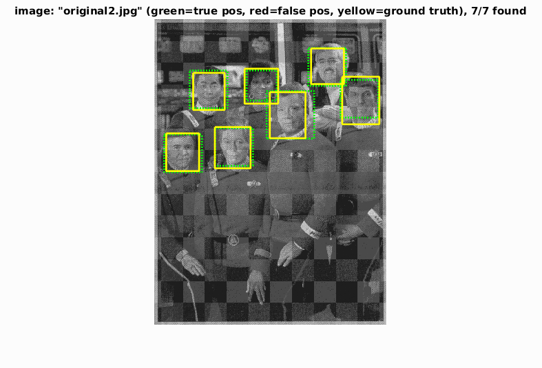 |
| 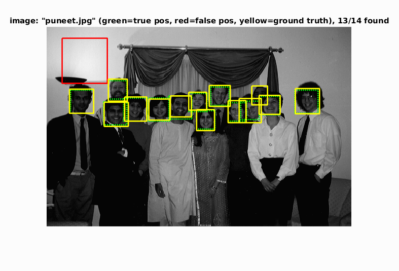 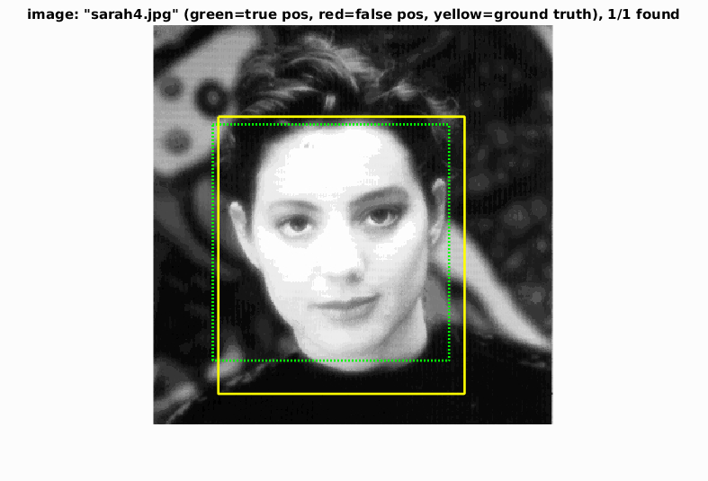 |
| 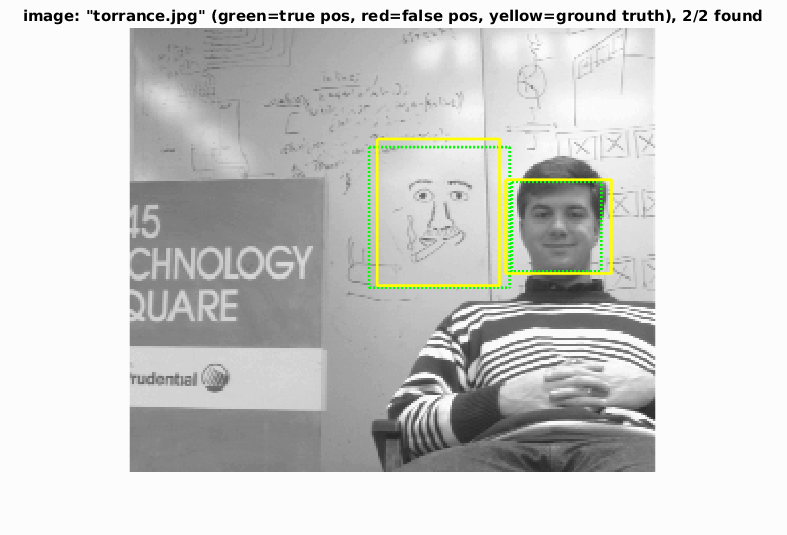 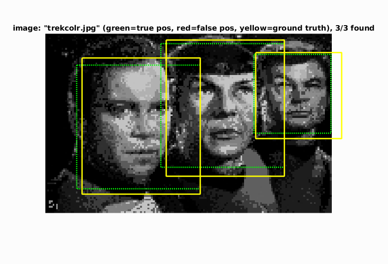 |